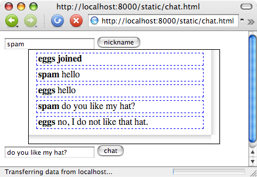
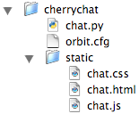

The goal of this tutorial is to introduce you to Orbited and the Python Orbited client API, pyorbited. The tangible goal is to produce a simple web-based chat application. There will be one main “chatroom” where every user who signs on is placed. We won’t deal with authentication or presence (detecting if someone timed out or left.) These are all possible with Orbited but are outside the scope of this tutorial. Below is a screenshot of the end goal.
This tutorial assumes you have already installed Orbited. If you haven’t then check out the tutorial on Installing Orbited.
CherryPy is a Python http server that allows you to expose Python functions to the web. To install CherryPy simply run:
easy_install CherryPy==3.0.1PyOrbited is a library of Python implementations of the Orbited client API. It currently consists of a basic socket-based implementation, a twisted implementation, and a pyevent/libevent implementation. For our purposes we only need the basic implementation, but all three come with PyOrbited. To install the library simply run:
easy_install pyorbitedFor more information about PyOrbited see the tutorial Using Python with Orbited.
This tutorial will keep the Python source as simple as possible, so the chat functionality will be bare-bones.
To begin, we create the directory and five empty files we will need for our chat server, as follows:
The chat.py file will contain the bulk of our code. To begin, we import cherrypy, along with the simple orbit client, which we initialize:
import cherrypy
from pyorbited.simple import Client
orbited = Client()Next, we create a ChatServer class, which contains functions for the operations which will be called by our JavaScript, join and msg. user_keys is a simple helper function which returns a list of users, to which we will send events:
class ChatServer(object):
users = []
def user_keys(self):
return ['%s, %s, /cherrychat' % (u, s) for u,s in self.users]
@cherrypy.expose
def join(self, user, session='0', id=None):
if (user, session) not in self.users:
self.users.append((user, session))
orbited.event(self.user_keys(), '<b>%s joined</b>' % user)
@cherrypy.expose
def msg(self, user, msg,session='0', id=None):
orbited.event(self.user_keys(), '<b>%s</b> %s' % (user, msg))As you can see, these two functions are preceded by a decorator, @cherrypy.expose, which tells CherryPy to expose them to HTTP GET requests from the JavaScript in our chat page.
The join function adds the user if he is not among those already logged in, and then sends an event to all users informing them of the newly-joined user. The msg function simply passes along the message to every connected user.
It is worthwhile to look at the user_keys helper function. The purpose of this function is to return a list of orbit keys that correspond to the users that are currently logged in. Each key is composed of three parts, the user id, the session id, and the location of the request. In our application we aren’t using sessions so every user is given the session id of ‘0’. The user id is simply the username we got from the join command, and the location we are choosing arbitrarily to be /cherrychat. Any valid HTTP location would work though. You’ll see this location again in the JavaScript.
Finally, some basic configuration code, taken essentially from the CherryPy StaticContent wiki (see that page for details), finishes off our Python code:
if __name__ == '__main__':
import os
current_dir = os.path.dirname(os.path.abspath(__file__))
# Set up site-wide config first so we get a log if errors occur.
cherrypy.config.update({'environment': 'production',
'log.screen': True,
'server.socket_port': 4700,
'server.thread_pool': 0,
'tools.staticdir.root': current_dir})
conf = {'/static': {'tools.staticdir.on': True,
'tools.staticdir.dir': 'static'}}
cherrypy.quickstart(ChatServer(), '/', config=conf)We should also take a quick look at orbit.cfg. There is very little in this file as the default configuration is mostly fine.
[global]
proxy.enabled = 1
proxy.keepalive = 0
[proxy]
/ -> http://127.0.0.1:4700To avoid cross-domain scripting problems we will use the orbit proxy to redirect all requests to our chat application. To JavaScript the Orbited daemon and the CherryChat server will seem to be one and the same. You may have noticed in our CherryPy configuration we set the thread pool to 0. This is to avoid any threading complexities that are out of the scope of this tutorial. Having a single thread introduces and issue with keepalive though, and as such we will disable it in our proxy.
The HTML for our chat example is very simple. It consists of two form text fields with their associated buttons, a div called #box, into which the content of the chat will go, and a hidden iframe to accept events from the application.
To begin the file (chat.html), we need a doctype declaration, and a header, which links to a CSS stylesheet and the client-side JavaScript:
<!DOCTYPE HTML PUBLIC "-//W3C//DTD HTML 4.01//EN"
"http://www.w3.org/TR/html4/strict.dtd">
<html>
<head>
<meta http-equiv="Content-type" content="text/html; charset=utf-8">
<title>CherryChat</title>
<link rel="stylesheet" href="/static/chat.css">
<script src="chat.js" type="text/javascript" charset="utf-8"></script>
</head>Next, we include a text field and button for the nickname:
<body>
<input type="text" id="nickname">
<input type="button" value="nickname" name="ablak" onclick="astarta();">And then a div which can accept the actual chat content, followed by another text field and button for adding to the chat:
<div id="box"></div>
<input type="text" id="chat">
<input type="submit" value="chat" onClick="chat();">Finally, we close with a hidden iframe element, which we will hide with CSS. Chat events are fed into this iframe in the form of small scripts, which push content into the div. And then finally we close out the remaining HTML elements:
<iframe id="events"></iframe>
</body>
</html>The CSS stylesheet for our chat page can style it however we like. In this case, we keep things very simple, setting a few margins, and adding dashed blue borders around each displayed chat event:
body {
margin-left:2em;
}
#box {
border: 1px solid black;
width: 80%;
margin: .5em auto .5em 0;
height: 10em;
overflow: scroll;
}
.event {
border: 1px dashed blue;
margin: .5em auto;
padding: .2em;
width: 90%;
display: hidden;
}The only requirement is to hide the events iframe:
#events {
display: none;
}The JavaScript is the meat of our client-side code. We are going to start with a little bit of boilerplate. We need a function that will create an XMLHttpRequest object no matter what browser we’re using. We also need to define the variable id. It will be used later in the tutorial. Its purpose is to keep Internet Explorer 6 from caching requests.
id = 0;
function createXMLHttpRequest() {
try { return new ActiveXObject("Msxml2.XMLHTTP"); } catch (e) {}
try { return new ActiveXObject("Microsoft.XMLHTTP"); } catch (e) {}
try { return new XMLHttpRequest(); } catch(e) {}
return null;
}The first bit of real code we need will handle connection. After someone types in their nickname we need to do two things. 1) Initialized the Orbited event stream. In this case we will use the iframe transport, so this entails connecting the hidden iframe to the Orbited server at the CherryChat location. 2) We need to let the chat server know that we are now connected so we receive any future messages. We do this by making a GET request to the server and we include our nickname.
We’ll break this up into two functions. The connect function will take care of the iframe and the join function will send the request to the chat server. We’ll have the connect function call the join function instead of the other way around because we want to first connect the iframe before we alert the server so we don’t miss any messages.
function connect() {
name = document.getElementById('nickname').value
e = document.getElementById('events')
e.src='/cherrychat|' + name + ',0,iframe'
join(name);
}
function join(user) {
xmlhttp = createXMLHttpRequest();
xmlhttp.open("GET", "/join?user=" + user, true)
xmlhttp.send(null);
}Next, we want to be able to see any events that are sent. If you recall the server code, we’ll be receiving events in the form of simple JavaScript strings. We just want to stick each string in its own div and put that div in our main chat_box div. The CSS will take care of the formatting.
It is important to note at this point that the iframe transport depends on the parent window having a function named event. Whenever an event is sent, it is sent in the form <script> window.parent.event(event_data);</script>. This means that its our job to actually define the event function. We’ll use this function to perform the afore mentioned dom manipulation. That is, we’ll have event actually put the text into the appropriate divs.
function event(data) {
chat_box = document.getElementById('box')
div = window.parent.document.createElement('div')
div.className = "event"
div.innerHTML = data
chat_box.appendChild(div)
chat_box.scrollTop = chat_box.scrollHeight;
}The final step is to provide a way to send messages. Sending a message is a matter of contacting the chat server to call the msg function. We need to provide the message text as well as the nickname of the sender. Also, remember how we defined the variable id? We want to increment id every time we send a message so that every call to the msg function looks different, event if we send the same message twice. If we don’t do this, then some browsers such as Internet Explorer 6 will not send the message a second time because it will have cached the result of the first request. We don’t actually care about the results of these requests though, rather we are interested in the effect of the request—to dispatch an orbit event. So having the cached result does us no good if the effect doesn’t also happen. Here is the code we need to send a message.
function send_msg() {
id = id + 1
xmlhttp = createXMLHttpRequest();
msg = document.getElementById('chat').value
nickname = document.getElementById('nickname').value
xmlhttp.open("GET", "/msg?id=" + id + "&user=" + nickname + "&msg=" + msg, true)
xmlhttp.send(null);
}And with that we are finished with the JavaScript side of our chat application. Everything else should be in place at this point, so you can open two terminals to the root cherrychat directory, in one starting Orbited:
orbitedAnd in the other running chat.py:
python chat.pyThen point your browser at http://localhost:8000/static/chat.html, and then open a second browser window and point it at http://127.0.0.1:8000/static/chat.html, and test the application. It’s important to use the two different hostnames localhost and 127.0.0.1 because some browsers limit the number of open connections you can have to each hostname to two. With this limit it is impossible to run two instances of the chat application on the same host. Of course, 127.0.0.1 and localhost should refer to the same local machine, so its a good way of tricking the browser into thinking its talking to separate servers.
We now have a basic implementation of a chat application. The next obvious steps are authentication and timeout. For a more advanced example of a chat application checkout the webirc SVN Repository. Webirc is an web-based IRC client written in Python with Twisted and Orbit. It deals with presence by sending regular pings to the browser.
Another issue that we glossed over is that of cross-domain scripting. If you recall our orbit.cfg file for this tutorial, we enabled the orbit proxy to dispatch requests to the chat server. The effect of this is that the browser only knows about the orbit server and thinks that all of its communication with the chat server is actually coming from the orbit server. This is important because browsers do not allow cross-domain scripting. This means that if we received events inside of an iframe that was served from localhost:8000, then we can’t make calls from the iframe to a parent window server from localhost:4700 because it counts these as different domains. The proxy is an easy way to ignore the whole issue.
Of course, on a production site it doesn’t make sense to use the orbit proxy for a variety of reasons. There will likely be a mismatch between the number of Orbited nodes you have and the number of web nodes you have, so there is no sensible proxy mapping. More importantly though, the proxy adds latency to each request and uses additional processor. The proxy should therefore be treated as a development and testing tool only. Orbited comes with built-in solutions for handling cross-domain scripting. One of those solutions is the iframe_domain transport. It is nearly identical to the iframe transport except that it dispatches an initial <script>document.domain="hostname"</script> to the browser right after its connected. “hostname” will be replaced with the top level hostname from the Host header of the request, with the port also stripped. So if the Host header is some.sub.domain.com:8000, then the initial script sent will be <script>document.domain="domain.com"</script>.
This problem is addressed in the JavaScript source of the webirc client as well, and you should take a look before you try to deploy your orbit applications in a production environment.